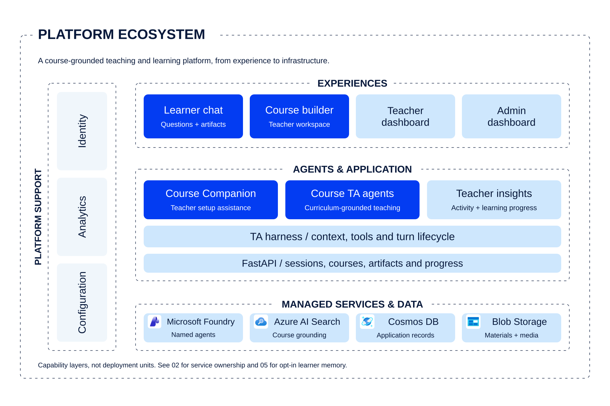
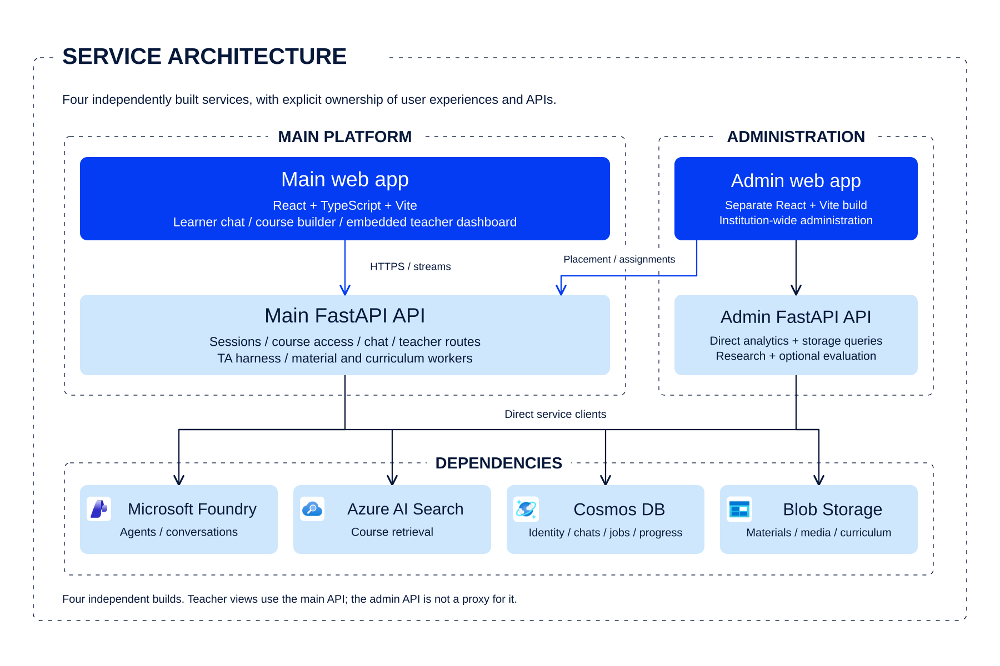
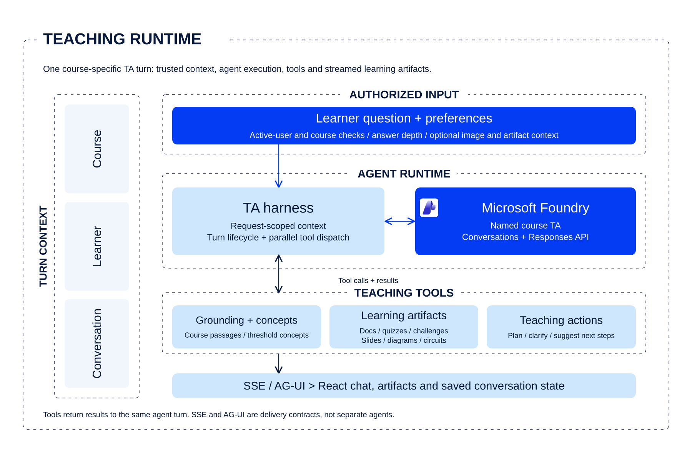
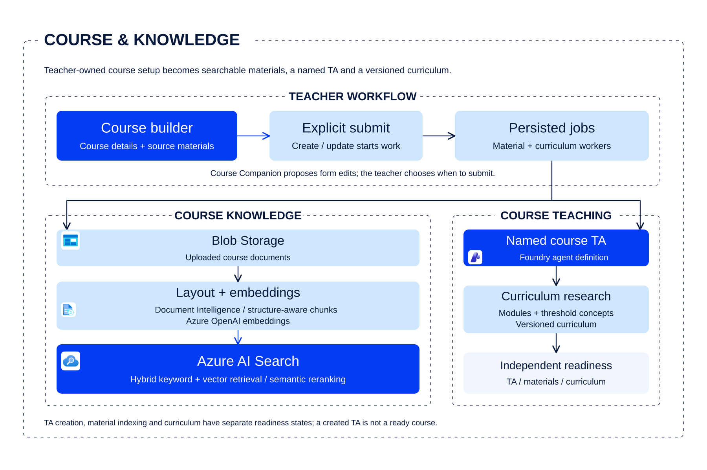
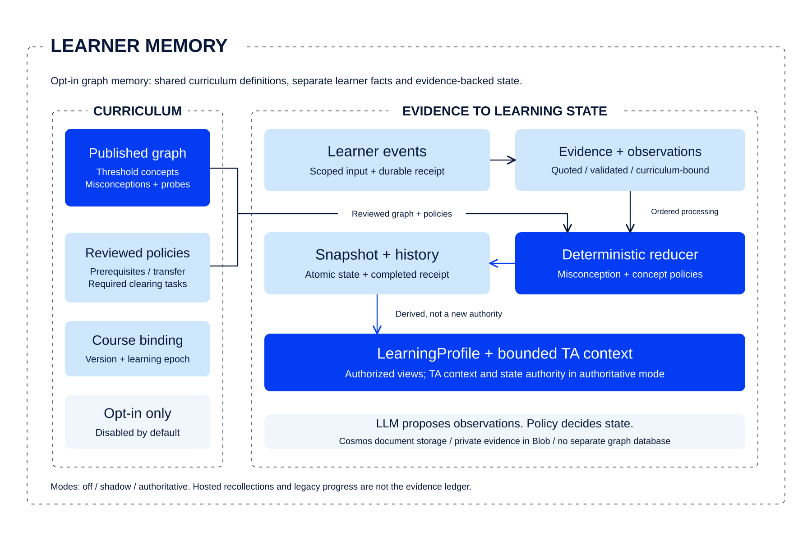

VIEW 01 / 05
Platform ecosystem



Layers group capabilities; they are not individual microservices. The teacher dashboard is embedded in the main web app. Graph memory is an optional path, detailed in figure 05.
FIVE VIEWS. ONE VISUAL LANGUAGE.
The Agentic Shiksha architecture style: a white canvas, thin dashed boundaries, flat light-blue layers, royal-blue emphasis and navy typography. Diagram colours come from the project logo; official Microsoft service icons retain their original artwork beside explicit product names. Architecture relationships are unchanged. Based on the current source, not an assumed cloud deployment.
VIEW 01 / 05

Layers group capabilities; they are not individual microservices. The teacher dashboard is embedded in the main web app. Graph memory is an optional path, detailed in figure 05.
VIEW 02 / 05

The admin UI also calls the main API for course placement and assignments. The admin API is not a proxy. Its access boundary must be independently authenticated and restricted; this figure is not a security-completeness claim.
VIEW 03 / 05

SSE and AG-UI are transport adapters, not separate agents. Tool results return to the same agent turn. Graph-memory context is only injected under the configured authoritative policy.
VIEW 04 / 05

Course Companion proposes unsaved form edits; it does not submit Create or Update. TA creation, material indexing and curriculum readiness are tracked separately. Search is course grounding, not a learner mastery store.
VIEW 05 / 05

Disabled by default. Course modes are off, shadow and authoritative. Shadow writes evidence without becoming progress authority; authoritative mode supplies TA context and learning-state authority. Cosmos stores graph documents; no separate graph database is required. Hosted memory and legacy progress are not the evidence ledger.
REUSABLE STYLE SYSTEM
Use a vector template for diagrams with exact labels and relationships. SVG keeps text sharp and editable; the PNG exports are ready for slides and documents. These images use no remote fonts or cloud calls. Always use the full name Agentic Shiksha in visible titles and labels.
Project palette and service logos: diagram colours are sampled from the Agentic Shiksha logo. Actual service nodes also embed the original Microsoft artwork from the Azure icon collection, without recolouring, cropping or distortion. These marks identify Microsoft services, not Agentic Shiksha components or conceptual learner states.
generate.mjs. Keep the source references and opt-in labels accurate. A card's service attaches the matching official logo to its actual product label; generic agents and evidence graphs are not Azure service nodes.node assets\web\architecture\generate.mjs --pngPNG rendering uses the main frontend's existing @playwright/test dependency and an installed Playwright Chromium browser. If that browser is missing, from the main frontend folder run npx playwright install chromium. Run without --png for dependency-free SVG generation and an SVG-only bundle; previously rendered PNGs are not advertised or packaged in that mode. Generation verifies the diagram palette, unchanged embedded logo bytes and full project name. PNG mode also checks service-to-logo/label mappings, icon clearance, text fit, overlapping cards, image dimensions, source references and gallery layout at desktop and mobile widths.
For visual editing, import an SVG into Figma or Inkscape. Insert SVGs or PNGs directly into PowerPoint. Diagram source size: 1800 x 1200; PNG export: 3600 x 2400. Text uses Arial with Helvetica and sans-serif fallbacks; another font may change label fit, so re-run the checks after editing.
Style brief for future diagrams: Agentic Shiksha Architecture Atlas; white canvas; navy uppercase titles; fine dashed grouping boxes; softly rounded flat light-blue cards; royal-blue emphasis; teal/cyan accents from the logo; generous spacing; minimal directional connectors; explicit service labels with the matching official icons. Keep cards flat without gradients or shadows. Retain the original colours and proportions of Microsoft product artwork as the only exception to the diagram palette.
Blue identifies the focus of a view, not deployment status. Dashed outlines identify group boundaries, not security guarantees. Source references work inside this repository; if you extract the image bundle elsewhere, return to the repository to inspect those files or regenerate PNGs.